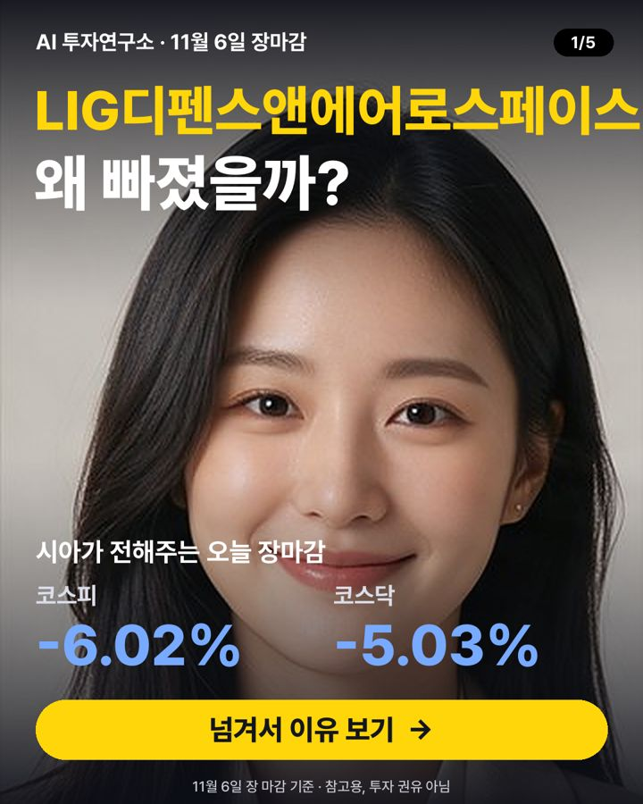

11월 6일 장마감 요약 — 코스피 -6.02%, 코스닥 -5.03%
2026-11-06 장 마감 기준 · 진행 윤시아 (시장 흐름)

오늘 코스피는 5,059.69로 -6.02%, 코스닥은 644.27로 -5.03% 마감했어요. 대형주 78종목 중 9개가 오르고 69개가 내렸어요. 원/달러 환율은 1,356원이에요.
지수 흐름
| 종가 | 하루 | 1주 | 1달 | |
|---|---|---|---|---|
| 코스피 | 5,059.69 | -6.02% | -11.71% | -23.64% |
| 코스닥 | 644.27 | -5.03% | -11.06% | -27.79% |
많이 오른 종목
- 삼성에스디에스 +4.88% · 215,000원
호재목표주가 상향과 AI 데이터센터 수요 기대가 주가 상승 요인입니다 - JYP Ent. +4.18% · 41,150원
뉴스관련 기사: "이단·사이비? 한번만 들어보라"…논란 속 JYP는 '부진의 늪' 풍덩 (한국경제TV) - 파마리서치 +3.96% · 236,000원
호재키움증권이 실적 부진에도 목표가를 12% 올려 호재로 평가했어요 - NAVER +2.56% · 188,600원
호재네이버가 소버린 AI에 관심을 받아 기대감이 높아졌어요 - 펄어비스 +2.50% · 32,850원
뉴스관련 기사: 코스피 10% 급락에도 웃었다…통신·K콘텐츠 지수 9%대 상승 [마켓시그... (서울경제)
많이 내린 종목
- LIG디펜스앤에어로스페이스 -10.74% · 320,000원
악재3분기 실적이 예상보다 크게 악화돼 주가가 급락했어요 - 삼성화재해상보험 -8.51% · 602,000원
악재영국 캐노피우스 인수로 대규모 현금 지출 우려가 커졌어요 - 두산에너빌리티 -7.86% · 45,150원
뉴스관련 기사: 두산, AI 인프라 투자 훈풍…전자BG 역대 최대 매출 (한경비즈니스) - 포스코퓨처엠 -7.46% · 162,500원
뉴스관련 기사: 나노필터로 유니콘의 꿈…뉴라이즌, 부산 첫 ‘혁신아이콘’ (국제신문) - 삼성SDI -6.96% · 474,500원
뉴스관련 기사: “현대차 비전·삼성 기술력… ‘원팀’으로 미래 열겠다” (조선일보)
누가 사고 팔았나 (순매수)
| 외국인 | 기관 | 개인 | |
|---|---|---|---|
| 코스피 | -5,256억 원 | +7,535억 원 | -6,886억 원 |
| 코스닥 | -580억 원 | +1,119억 원 | -606억 원 |
내일 체크 포인트
- 외국인 흐름 — 오늘 코스피에서 -5,256억 원 순매도
- 국제유가 — 최근 한 달 -6.36%
- 미국 10년 금리 4.88% · 공포지수 VIX 20.5
- 20일 이동평균선 위에 있는 대형주 26/78종목
이 글은 공개된 시세·수급 데이터와 그날 뉴스 제목을 정리한 참고 자료이며 투자 권유가 아닙니다. 시세는 거래소 종가 기준이고, 투자 판단과 결과의 책임은 본인에게 있습니다.